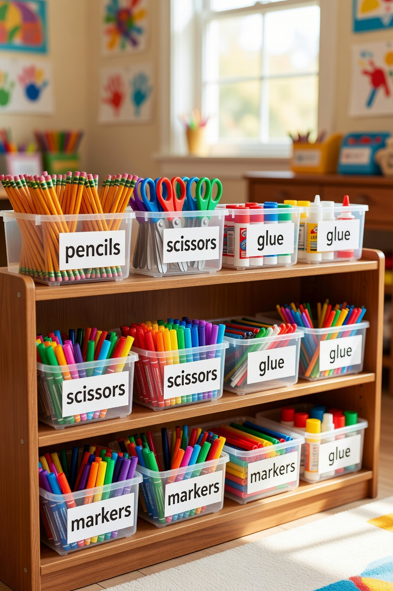
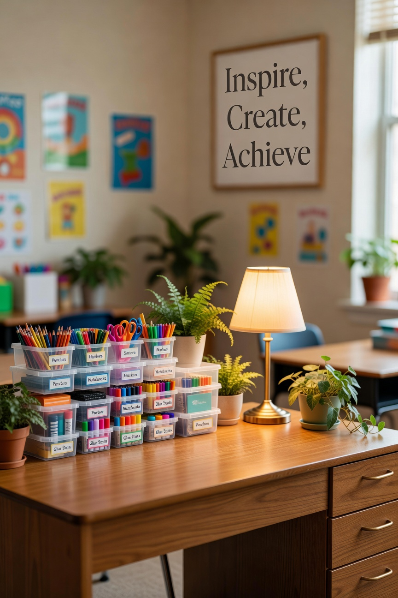
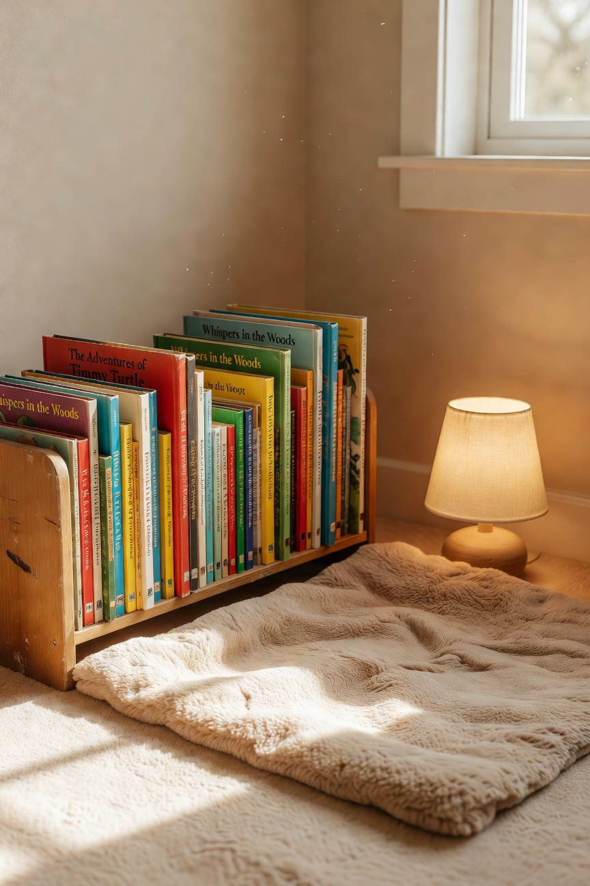

There is something about an empty classroom in August that I find genuinely exciting. I know that sounds like a teacher thing to say and it absolutely is. But there is real possibility in that empty space. It is going to become a place where kids learn things, where they feel safe, where they belong. That matters. Setting it up right matters.
I have developed a system over the years and I am sharing it here because I get asked about my classroom setup constantly. Here is how I do it.
Step One: Clear Everything Out
Before I bring anything in, I clear everything out. Whatever was left from the previous year gets evaluated. What is still useful stays. What is worn out, outdated, or just accumulating dust goes. A fresh year deserves a fresh start and you cannot make space for new things if you are holding onto everything from before.
Step Two: Deep Clean
I bring my own cleaning supplies because I have preferences. All purpose cleaner, microfiber cloths, something that actually makes the desks feel clean rather than just smearing things around. This step takes half a day and is absolutely worth it.
Step Three: The Organization System

This is where I spend the most time and the most thought. My classroom organization is built around clear bins with labels. Student supply bins by table group, a dedicated spot for turned-in work, an organized teacher station, and a reading corner that actually looks like a place you would want to sit in.
I label everything. The kids know where everything is. I get fewer “where does this go” questions and more actual work done. The system pays for itself in saved minutes every single day.
Step Four: Making It Feel Like a Place

My small lamp goes in the corner. The plants come back -- the ones that survived the summer, which is not always all of them. I put up bulletin board materials that fit the year without overdoing it. Overstimulating classroom environments are a real thing and I try to keep mine calm and focused.
A few framed quotes that mean something to me. Some student-friendly reference materials on the walls. Done.
The Reading Corner

A reading corner with a small bookshelf stocked with books I genuinely love. This matters more than people realize. Students who see their teacher's genuine enthusiasm for books read more. The reading corner signals: this is a place that values reading. I protect that corner every year.
Step Five: The Supply Station
Students have access to a supply station in my classroom -- pencils, scissors, glue sticks, markers. It is fully stocked at the start of the year and I maintain it. The supply station means no one is ever unable to work because they forgot something, and it removes that particular friction entirely. Worth every penny I spend on it.
The Part Nobody Talks About
Setting up a classroom is emotional. At least it is for me. I am standing in a space that is about to belong to a group of kids I have not met yet, and I am trying to make it worthy of them before I know who they are. Every August I think about that. Every August it makes me want to do it right.
The Saturday afternoons in the empty classroom, the rearranging and relabeling and reorganizing -- it all adds up to a room that tells students: someone put thought into this for you. I hope they feel that.
-- Christin Marie